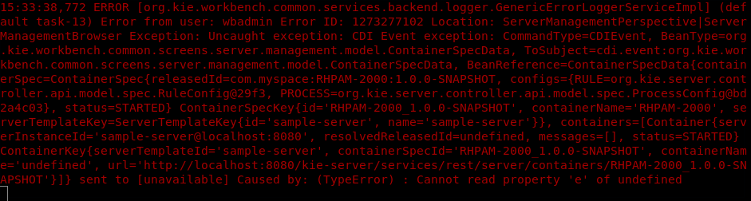

Improvement in generic error dialogues
We have improved the generic error dialogues in business central. Generic error dialogue is a single error popup that can notify user about all the different errors that business central may produce. Following are the features that are added to new error dialogues :
- Users can now see the stack trace of the generated error in the pop itself.
- Users can now snooze the dialogues for a time interval.
- Logging the errors in server log and storing precisely the perspective/screen/editor where the error took place.
- Providing users with an error ID to fetch the error details later.
- Some basic UI improvements
Error Logging
When an error is generated, the error is logged into the server logs to be fetched and retrieved at a later time. Following information are stored currently in logs :
- User.
- Error ID
- Location
- Exception

Error Snoozing
In case a user doesn’t wish to be notified for a particular period of time, he/she can select the checkbox “Dont show this message again for” and select a time from the dropdown. After clicking a “ok” button, any error message generating for that selected period of time will not be notified with the popup. However, the error messages still gets logged into the server logs.
Many thanks to Guilherme, Paulo, Eder for their support to deliver this awesome functionality.
Improvement in generic error dialogues was originally published in kie-tooling on Medium, where people are continuing the conversation by highlighting and responding to this story.